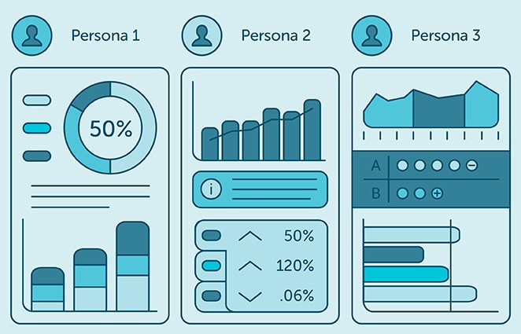

Saya adalah seorang Mahasiswa di Universitas Bina Sarana Informatika Jurusan Sistem Informasi. Saya memiliki ketertarikan dalam bidang UI/UX Designer dan Data Analyst yang fokus menciptakan pengalaman digital yang modern, intuitif, dan berbasis data.
Saya memiliki ketertarikan pada bagaimana desain dan data dapat bekerja bersama untuk menciptakan pengalaman digital yang efektif dan bermakna. Berawal dari minat dalam memahami perilaku pengguna, saya mengembangkan kemampuan di bidang UI/UX Design sekaligus analisis data untuk menghasilkan solusi yang tidak hanya menarik secara visual, tetapi juga berbasis insight dan kebutuhan nyata pengguna.

| Bidang | Keahlian |
|---|---|
| 🎨 UI/UX Design | User Research, Wireframing, Prototyping, Usability Testing, Figma. |
| 📊 Data Analyst | Data Cleaning, Data Visualization, Microsoft Excel, Dashboarding, Power BI. |